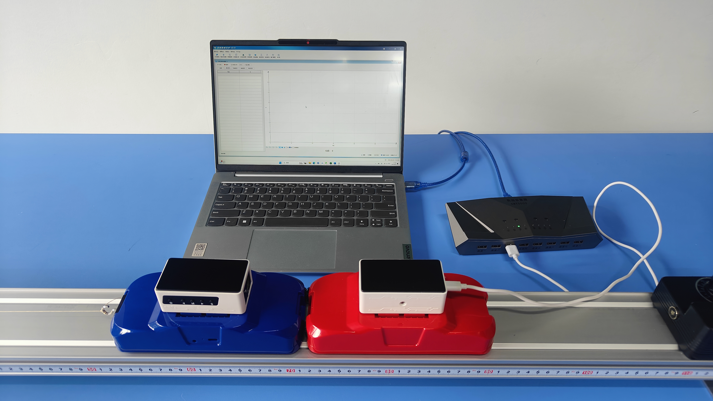
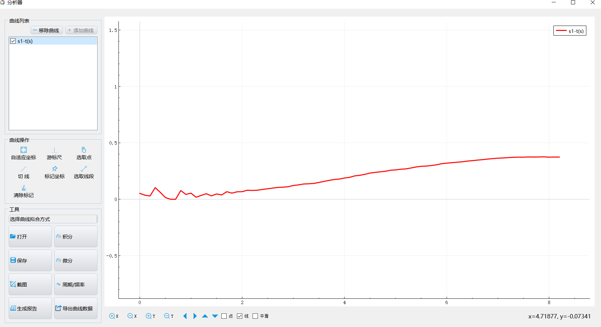
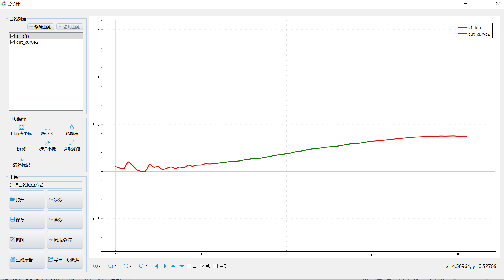
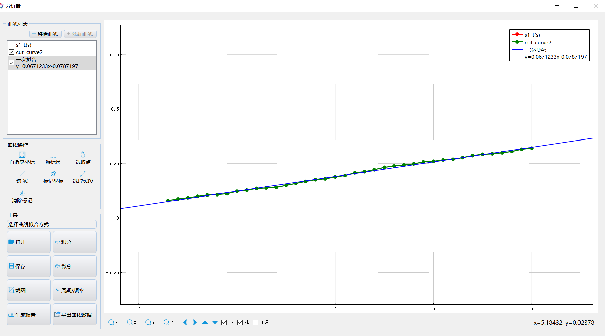

实验九 小车平均速度的测量
【实验目的】
通过实验理解并掌握平均速度的概念与计算公式，同时培养学生的动手计算实践能力。
【实验原理】
平均速度是指物体在一段时间内所运动的距离与这段时间的比值。其数学表达式为：v = Δx / Δt，其中，Δx表示物体在时间Δt内所运动的距离。
【实验器材】
数据采集器、一体位移发射器、一体位移接收器、多用力学导轨实验器和计算机等。
【实验装置】

【实验操作步骤】
搭建好实验环境，将运动传感器发射端固定在导轨末端，将运动传感器反射端固定在运动小车上；调节轨道为水平，然后将小车放置在轨道上；
打开实验数据分析软件，连接好数据采集器和运动传感器，将两辆小车靠在一起，以此时为初始位置，将传感器调零；
打开“表格视图”，点击“采集”按钮，推动小车使其在导轨上运动，待小车运动到导轨末端时点击“暂停”，停止记录数据；
点击“数据分析”，做出小车运动的位移－时间图像；
观察图像，从中选取有效部分进行“线性拟合”；
从拟合曲线的表达式中可以得出小车的运动速度。

位移-时间图像

选取线段

线性拟合
【思考与讨论】
1.在分析实验图像时，为什么把小车运动过程中的图像的前面一部分和后面一部分舍去？这两个部分小车做的是匀速直线运动吗？
2.上面说拟合曲线的斜率就是小车做匀速直线运动速度的大小，为什么？有什么方法可以验证吗？
【自由探究】
将轨道固定运动传感器发射端的一端调高，然后将小车从轨道高端释放，此时小车不再做匀速直线运动，而是做匀加速直线运动，依照前面的方法做出小车运动的位移－时间图像，试通过得到的位移－时间图像分析小车做匀加速直线运动的运动特征。